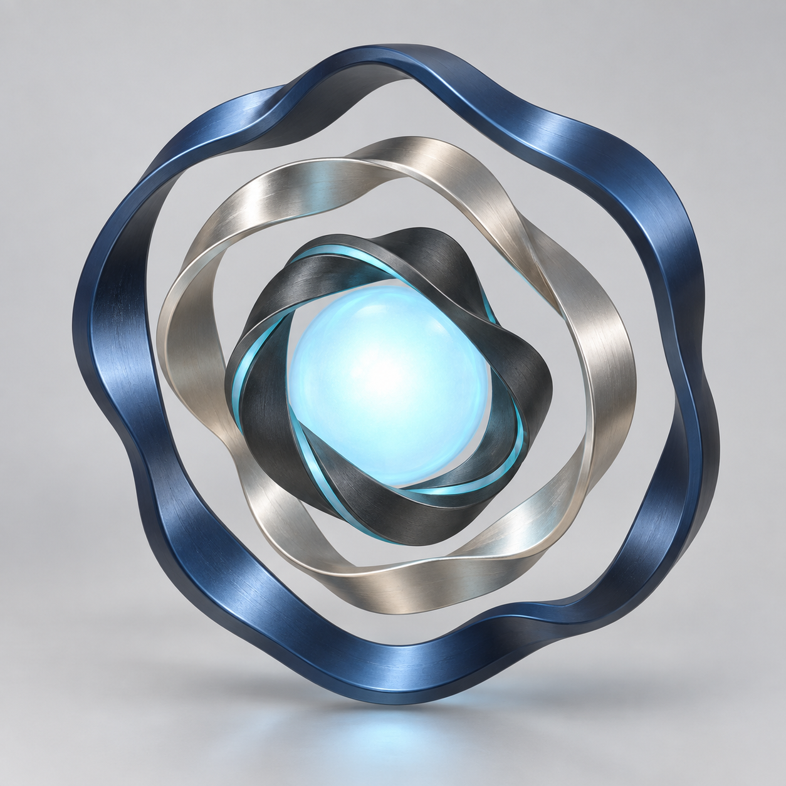

The image was a reference, not mesh input

astra-three-band-concept.png.The image-generation prompt remains in references/image-generation-prompt.txt. The authority boundary is recorded in references/concept-to-geometry.md: appearance comes from the image; geometry correctness comes from mathematics.
Concept SHA-256: 3EBB88269167EFFC40138E5B5AC5DE72B895E06AE0E443B6722EF759C0A96207
Who converts what
.blend..glb.| Stage | Input → output | Responsible component | What actually changes |
|---|---|---|---|
| Concept | Text constraints → PNG | Image-generation tool | Produces a 2D appearance reference. It does not infer hidden geometry. |
| Interpretation | PNG + handoff equations → JSON + Python | Astra/Codex | Chooses radii, widths, twists, harmonics, materials, orientations, and construction logic. |
| Construction | JSON + Python → vertices, faces, materials, scene | Blender, bpy, mathutils | Instantiates the first genuine 3D representation. |
| Authoring file | Blender scene → energy-sculpture.blend | Blender | Saves editable meshes, materials, hierarchy, lights, and render setup. |
| Export | Selected asset collection → energy-sculpture.glb | Blender glTF exporter | Serializes geometry, named nodes, transforms, and supported PBR properties. |
| Transport | GLB file → bytes in browser memory | Local HTTP server + browser networking | Moves data only; no geometry inference occurs. |
| Loading | GLB bytes → Object3D, Mesh, geometry, materials | Three.js GLTFLoader | Reconstructs the serialized scene hierarchy as JavaScript objects. |
| Interaction | Pointer, scroll, click, time → transforms | Project JavaScript | Updates three independent pivots, spring state, core offset, separation, and pulse. |
| Drawing | Scene + camera + lights → GPU commands | Three.js WebGLRenderer | Builds shaders, uploads buffers, and submits draw work. |
| Pixels | GPU work → canvas image | WebGL implementation + GPU | Transforms vertices, shades fragments, and rasterizes each frame. |
Astra-generated Blender construction code
The complete generator is scripts/create_asset.py. Its only design input is config/sculpture-parameters.json; it does not read the PNG.
Harmonic centerline
rho() adds radial lobes. centerline_base() adds a non-planar wave. orientation_matrix() puts each band in a distinct assembly plane.
def rho(band, u):
return band["R"] * (
1
+ band["epsilon"] * cos(band["m"] * u + band["phi"])
+ band["eta"] * sin(band["n"] * u + band["psi"])
)
def centerline_base(band, u):
r = rho(band, u)
return Vector((
r * cos(u),
r * sin(u),
band["h"] * sin(band["k"] * u + band["gamma"])
))Closed transport frame
closed_transport_frame() carries a local cross-section basis around the curve. It measures the final seam mismatch and distributes the correction by accumulated arc length.
close = atan2(
t0.dot(raw[count].cross(raw[0])),
clamp(raw[count].dot(raw[0]), -1, 1)
)
for j in range(count + 1):
corr = close * lengths[j] / total
a = rotate_about(tangents[j], corr, raw[j])
b = tangents[j].cross(a).normalized()Cross-section sweep
build_band_mesh() applies full and harmonic twist, samples a rounded rectangular superellipse, and sweeps it through the corrected frame. Adjacent samples become quad faces.
chi = (
band["fullTwists"] * u
+ radians(band["tauDegrees"])
* sin(band["q"] * u + band["delta"])
)
d1 = cos(chi) * f1[j] + sin(chi) * f2[j]
d2 = -sin(chi) * f1[j] + cos(chi) * f2[j]
a, b = superellipse(band["W"], band["T"], band["p"], theta)
vertex = web_to_blender(points[j] + a * d1 + b * d2)Save and export
Blender saves the editable authoring scene, selects only ExportAsset, and exports a Y-up GLB without cameras or lights.
bpy.ops.wm.save_as_mainfile(filepath=str(blend_path))
bpy.ops.export_scene.gltf(
filepath=str(glb_path),
export_format="GLB",
use_selection=True,
export_yup=True,
export_lights=False,
export_cameras=False,
)Three.js browser code
The web layer does not recreate the bands. It loads Blender's GLB, locates the named nodes, attaches independent pivots, and changes those pivots in response to browser input.
GLB loading
public/src/main.js uses the official loader. A failed load switches to the Blender-rendered fallback instead of leaving a blank canvas.
new GLTFLoader().load(
'./models/energy-sculpture.glb',
installGltf,
reportProgress,
() => document.body.classList.add('fallback')
);Independent runtime pivots
installGltf() finds OuterBand, MiddleBand, and InnerBand. Each receives its own centered parent and spring state.
for (const name of BAND_NAMES) {
const mesh = findRequired(exportRoot, name);
const pivot = new THREE.Group();
pivot.name = `${name.replace('Band', '')}Pivot`;
assembly.add(pivot);
pivot.add(mesh);
bands[name] = { mesh, pivot };
springs[name] = new BandSpring(name);
}Pointer-to-rotation conversion
public/src/interaction.js converts normalized pointer coordinates into different rotation-vector targets using one response matrix per band. The shared gain is 2.35.
export function pointerToTarget(mx, my, bandName) {
const sx = Math.tanh(1.2 * mx);
const sy = Math.tanh(1.2 * my);
const z = [sx, sy, sx * sy];
const m = A[bandName];
return new THREE.Vector3(
m[0][0] * z[0] + m[0][1] * z[1] + m[0][2] * z[2],
m[1][0] * z[0] + m[1][1] * z[1] + m[1][2] * z[2],
m[2][0] * z[0] + m[2][1] * z[1] + m[2][2] * z[2]
).multiplyScalar(2.35);
}Fixed-step spring state
Each BandSpring integrates angular displacement and velocity. Different natural frequencies and damping ratios create visibly different inertia.
step(dt) {
const { omega, zeta } = SPRINGS[this.name];
const accel = this.target.clone()
.sub(this.theta)
.multiplyScalar(omega * omega)
.addScaledVector(this.velocity, -2 * zeta * omega);
this.velocity.addScaledVector(accel, dt);
this.theta.addScaledVector(this.velocity, dt);
}Source and artifact map
- astra-three-band-concept.pngPortable copy of the original generated concept image.
- references/image-generation-prompt.txtThe exact art-direction prompt.
- config/sculpture-parameters.jsonGeometry and authoring-material values.
- scripts/create_asset.pyDeterministic Blender mesh construction, preview rendering, validation reporting, save, and export.
- assets/energy-sculpture.blendEditable Blender scene.
- public/models/energy-sculpture.glbBinary glTF asset consumed by the browser.
- public/src/main.jsThree.js scene, loader integration, named pivots, inputs, pulse, lighting, diagnostics, and animation loop.
- public/src/interaction.jsResponse matrices, spring dynamics, scroll offsets, quaternion conversion, and pulse timing.
- public/index.htmlInteractive canvas, controls, status, fallback, and import map.
- server.cjsMinimal loopback-only static server.
- evidence/geometry-report.jsonMesh counts, closure errors, shell bounds, GLB size, and checksum.
- evidence/browser-report.mdObserved browser behavior and independent-pivot diagnostics.
{kind=link}